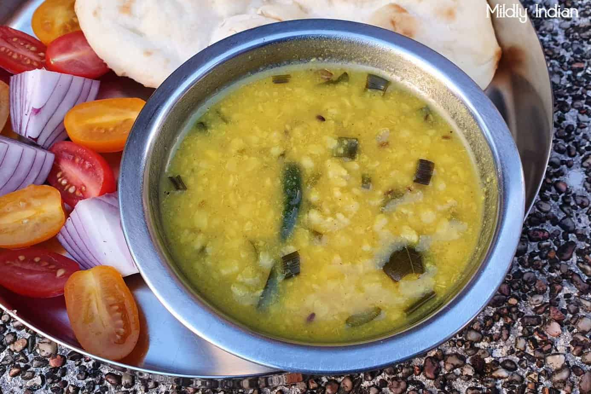

Moong Dal

Description
Moong dal is a wholesome vegeterian
Indian meal that is glutton free and
can be made vegan.
Ingredients
- ½ cup moong dal (split and hulled mung lentils)
- ⅓ cup onions finely chopped
- ½ cup tomatoes chopped
- 1 inch ginger finely chopped or minced
- ¼ teaspoon red chili powder or ¼ teaspoon cayenne pepper
- ⅓ teaspoon turmeric powder (ground turmeric)
- 1.5 cups water for pressure cooking salt as required
Steps
- First rinse the moong lentils a couple of times in water. Drain the water and set the lentils aside.
- In a 3 litre stove-top pressure cooker take the rinsed lentils, chopped onions, chopped tomatoes and finely chopped ginger. Also add the turmeric powder, red chili powder and water to the cooker. Mix well.
- Pressure cook for 5 to 6 whistles on medium flame till the moong lentils are softened well. Once the pressure settles down, remove the lid and stir the dal.
- If the dal looks thick, then add some water and simmer for 1 to 2 minutes.
- Add salt. Mix very well and keep aside. Check the taste and if required you can add more salt.
- In a small pan, heat oil or ghee or butter. First fry the cumin seeds.
- Next add the garlic and green chili and fry for some seconds. Don't brown the garlic. Switch off the flame.
- Now add the garam masala powder, red chili powder and asafoetida. Switching off the flame earlier ensures that the spice powders don't get burned.
- Quickly stir and immediately pour the tempering mixture in the dal.
- Stir the dal and serve hot moong dal with steamed rice or chapatis.
- The moong dal tadka tastes better as it is and there is no need to garnish or add coriander leaves to it.
- But if you want you can always garnish with some coriander leaves. For a slight tang you can also squeeze some lemon juice.